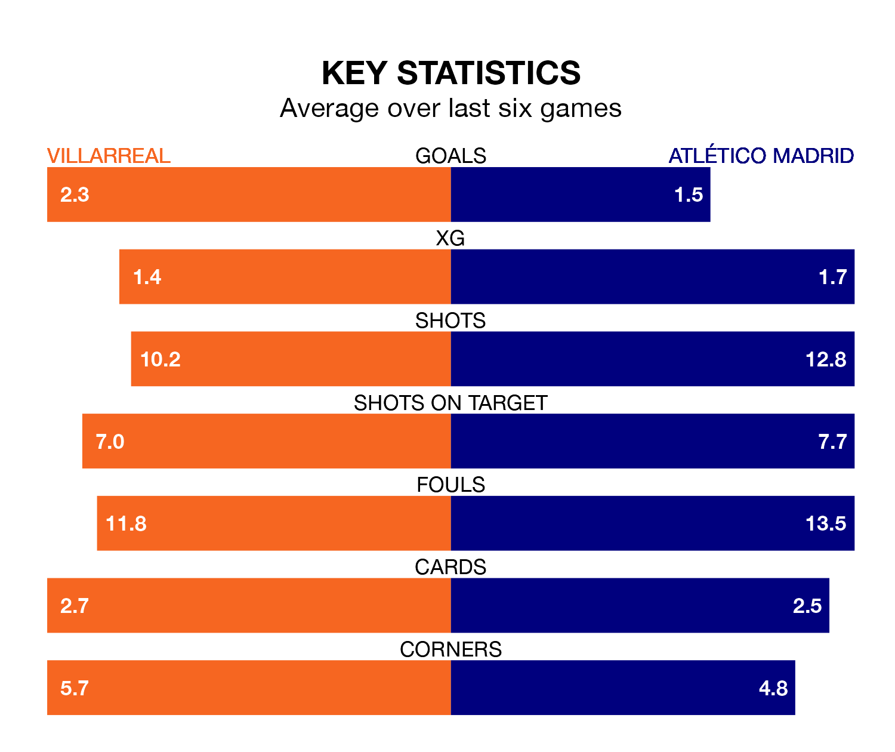

Villarreal host Atlético Madrid at Estadio de la Cerámica on late Monday on the back of four consecutive wins in La Liga.
Villarreal have picked up 14 points from their last six games, and they face an Atlético side who have lost their last two matches, and collected seven points from the last possible 18.
With 54 goals in 29 games so far this season, Atlético are scoring more than average in the league with 1.9 goals per game. And they are conceding fewer than average, letting in 34 goals at a rate of 1.2 per game.
Villarreal are also above average scorers, with 1.6 goals per game, compared to a league average of 1.3. They have conceded 1.8 goals per game.
In the last 10 years, Villarreal and Atlético have played each other on 20 occasions. They won six each, and they drew eight times.
On average, Villarreal scored 1.0 goal and Atlético 1.0 in those matches.
Their last meeting was on November 12, when Atlético won 3-1 at home.
The home team's Álex Baena is the league's most creative player, racking up nine assists in 26 appearances so far this season.
For the visitors, Antoine Griezmann has set up the most goals, having laid on six assists in 25 games.
Atlético are fifth in the table after 29 games, of which they have won 17 and drawn four, earning 55 points.
Villarreal are five places behind Atlético in 10th, with 10 wins and eight draws putting them on 38 points.
Villarreal's last match was on March 17, a 1-0 win against Valencia CF, with Jorge Cuenca getting the goal for Villarreal.
Atlético lost 3-0 against FC Barcelona last time out, also on March 17.
Monday's match will be refereed by Mario Melero López, who has taken charge of 11 La Liga games so far this season, issuing one red card and booking 43 players. He has awarded one penalty.
The last Villarreal game Melero López refereed was a 1-1 away draw with Deportivo Alavés on February 10. His last Atlético match was their 2-1 loss away at UD Las Palmas on November 3.
Updated: 10:31 (UTC), 31/03/24